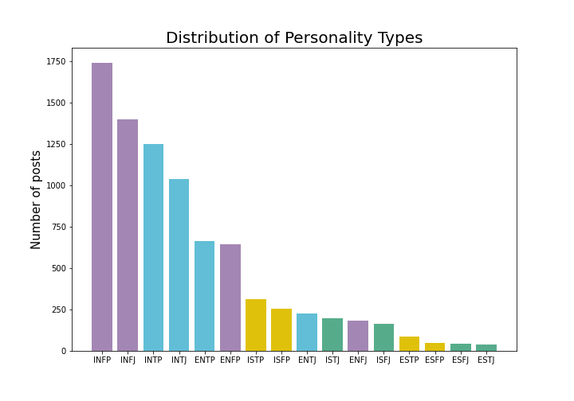

The purpose of this project is to apply natural language processing and machine learning classification algorithms to examine if a person’s MBTI traits correlates with his/her style of writing on the forums.
The publicly available Myers Briggs personality type dataset on Kaggle was used for this project. This dataset contains over 8675 rows of data. On each row is a person’s:
- Type (4 letter MBTI code/personality type)
- A section of each of the last 50 things they have posted (Each entry separated by "|||" (3 pipe characters))
To examine the proportionality of each of the sixteen personality types, Matplotlib was used to plot the value counts of each of these sixteen types. The figure shows that there was high class imbalance in the dataset.
To handle the class imbalance issue, the following two steps were taken:
- First step was to divide the single “type” feature into four features:
- Extroversion vs. Introversion
- I - 0
- E - 1
- Sensing vs. Intuition
- N - 0
- S - 1
- Thinking vs. Feeling
- F - 0
- T - 1
- Judging vs. Perceiving
- P - 0
- J - 1
- The second step was to use random under sampling technique when building machine learning model. This is covered in step 6.
Word-level Term Frequency (TF)
Word-level TF measures the frequency of each word in a post. It provides insights into the importance of words within individual posts.
Library Used: scikit-learn's CountVectorizer
Word-level Term Frequency-Inverse Document Frequency (TFIDF)
TFIDF balances the importance of words not only within a post but also across all posts. It considers the rarity of words in the entire dataset.
Library Used: scikit-learn's TfidfVectorizer
Emotion Extraction
Emotion extraction involves analyzing posts to identify emotions expressed, such as joy, surprise, anticipation, disgust, anger, sadness, fear, trust, confidence, and positivity.
Library Used: NRCLex (Natural Language Toolkit)
Sentiment Extraction
Sentiment extraction focuses on determining the sentiment expressed in posts, distinguishing between positive, negative, and neutral sentiments.
Library Used: NLTK vader
In this final step, several classification models were applied to predict Myers-Briggs personality types based on the processed dataset.
Data Splitting
The dataset was split into X (input features) and y (target). X included clean posts, compound sentiment scores, pos tag counts, and other relevant features. Y was set to four target features: E (Extrovert), N (Intuition), T (Thinking), and J (Judging).
Imbalanced Data Handling
Since the data exhibited imbalance, an Imbalance Learn Pipeline was employed. The pipeline comprised the preprocessing step, SMOTE (Synthetic Minority Over-sampling Technique) to address class imbalance, and the RandomForestClassifier.
Classification Models
The following models were built, trained, and tested on the dataset:
- Random Forest (RF)
- Support Vector Machine (SVM)
- Logistic Regression (LR)
- Decision Tree (DT)
- Gradient Boosting (GB)
- eXtreme Gradient Boosting (XGB)
- Light Gradient Boosting Machine (LGBM)
- CatBoost (CB)
- AdaBoost (AB)
- Bagging (B)
- Extra Tree (ET)
Following was the results obtained :
 }})
Stacking Model
A stacking model was implemented using three base models: Gradient Boosting (GB), eXtreme Gradient Boosting (XGB), and Light Gradient Boosting Machine (LGBM). These three consistently outperformed in all metrics. For the meta-model, CatBoost (CB) was selected as it performed better compared to others.
Following was the results obtained :
 }})
Evaluation Metrics
Evaluation metrics such as Accuracy , F1-Score , Precision , Recall and AUC were employed to assess the models and identify the best-performing one.Final Model Selection
Based on the accuracy scores, the Stacking Model with SMOTE handling class imbalance was selected as the final model for predicting Myers-Briggs personality types.
“The human race is just a chemical scum on a moderate-sized planet, orbiting around a very average star in the outer suburb of one among a hundred billion galaxies. We are so insignificant that I can't believe the whole universe exists for our benefit. That would be like saying that you would disappear if I closed my eyes.”